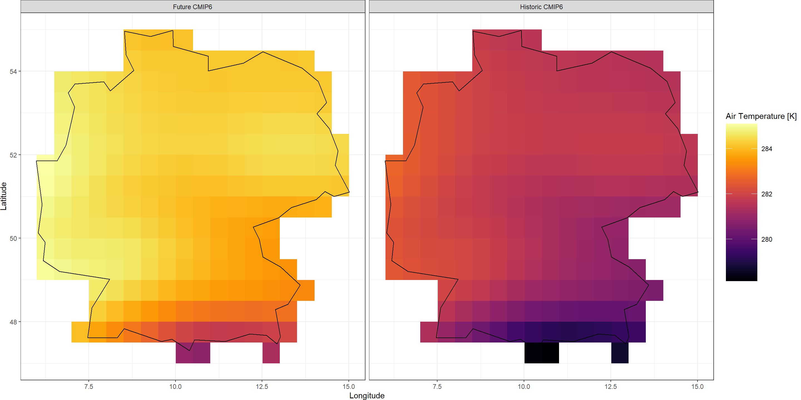
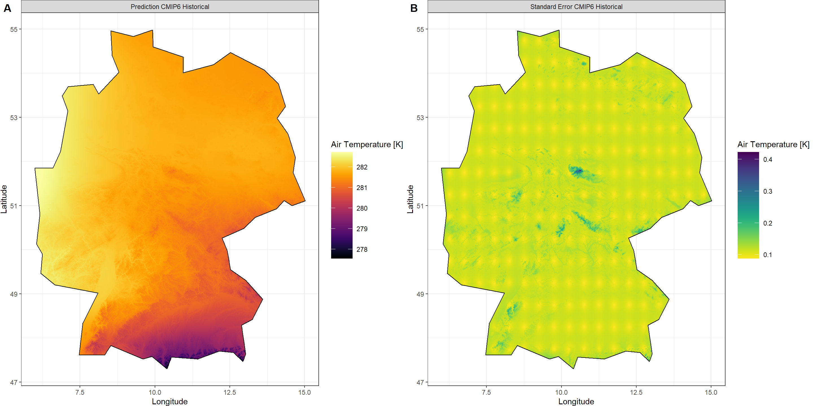
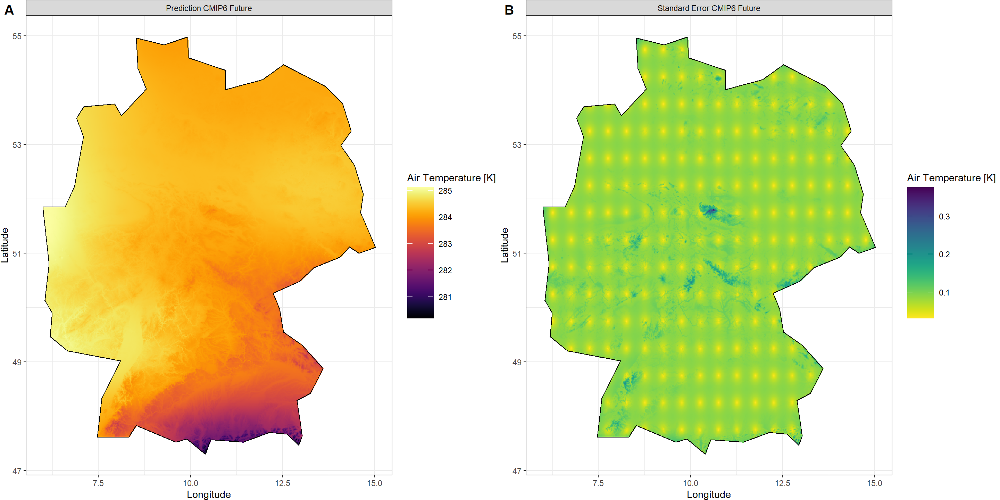
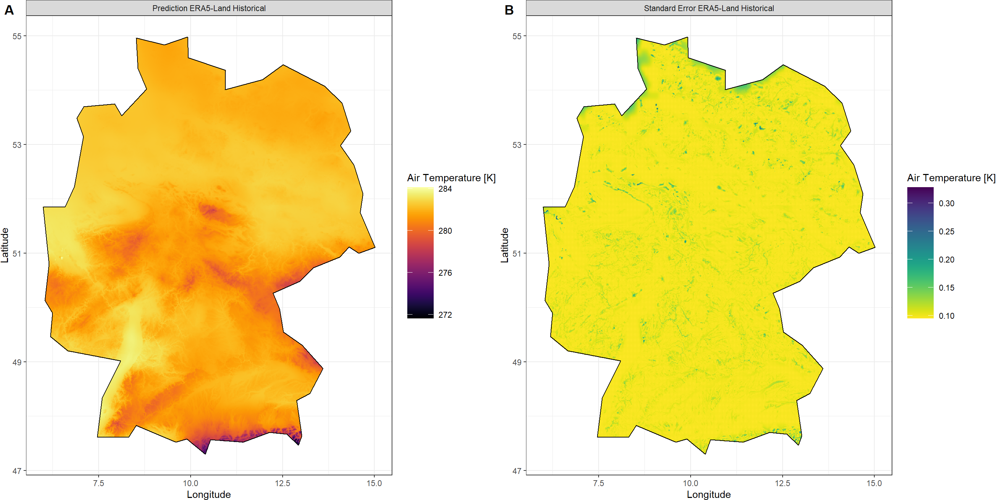
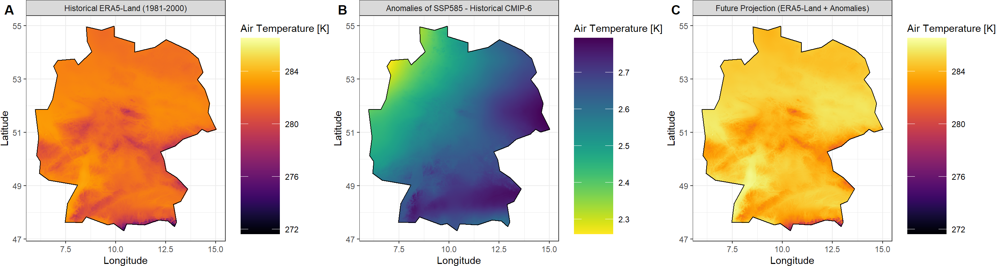

Projection Downscaling
KrigR is currently undergoing development. As a result, this part of the workshop has become deprecated. Please refer to the setup quick guide portions of this material as these are up-to-date.
First, we load KrigR:
library(KrigR)
I expect that you will often be interested not just in past and current climatic conditions, but also in future projections of climate data at high spatial resolutions.
KrigR workflow can be used to establish high-resolution, bias-corrected climate projection products.
This time, we run our exercise for all of Germany because of its size and topographical variety.
Shape_shp <- ne_countries(country = "Germany")
KrigR Process for Projections
We published the the KrigR workflow for downscaled climate projections in
this publication (Section 3.5) and I will walk you through the contents thereof here.
To achieve downscaled projection products we require three data products:
- Historical climate data from ERA5(-Land)
- Historical climate data from projection source
- Future climate data from projection source
Subsequently, the data products are downscaled to the desired spatial resolution using krigR(). Finally, the difference between the downscaled projection-sourced data are added to the historical baseline obtained from (downscaled) ERA5(-Land) data. This achieves bias correction.
Obtaining ERA5(-Land) Data
Now, let’s obtain the historical baseline from ERA5-Land for the same time-period as our CMIP6 historical data.
Click here for file if download takes too long:
Download Germany_Hist_ERA.nc and place it into your data directory.if(!file.exists(file.path(Dir.Data, "Germany_Hist_ERA.nc"))){
Hist_ERA_ras <- download_ERA(Variable = "2m_temperature",
DateStart = "1981-01-01",
DateStop = "1999-12-31",
TResolution = "month",
TStep = 1,
Extent = Shape_shp,
Dir = Dir.Data,
FileName = "Germany_Hist_ERA",
API_Key = API_Key,
API_User = API_User,
SingularDL = TRUE)
Index <- rep(1:12, length = nlayers(Hist_ERA_ras))
Hist_ERA_ras <- stackApply(Hist_ERA_ras, indices = Index, fun = mean)
writeRaster(Hist_ERA_ras, filename = file.path(Dir.Data, "Germany_Hist_ERA"), format = "CDF")
}
Hist_ERA_ras <- mean(stack(file.path(Dir.Data, "Germany_Hist_ERA.nc")))
Obtaining Projection Data
Here, we use CMIP6 projection data manually sourced from the ECMWF CDS distribution.
download_ERA() to work with other ECWMF CDS data sets aside from ERA5(-Land). This includes this CMIP6 data set.
Historical Baseline
Click here for file:
Download historical_tas_1981-2000.nc and place it into your data directory.train_HIST <- mean(stack(file.path(Dir.Data, "historical_tas_1981-2000.nc")))
train_HIST <- crop(train_HIST,extent(Hist_ERA_ras))
train_mask <- KrigR::mask_Shape(train_HIST, Shape_shp)
train_HIST <- mask(train_HIST, train_mask)
Future Projection
Click here for file:
Download ssp585_tas_2041-2060.nc and place it into your data directory.train_SSP <- mean(stack(file.path(Dir.Data, "ssp585_tas_2041-2060.nc")))
train_SSP <- crop(train_SSP,extent(Hist_ERA_ras))
train_mask <- KrigR::mask_Shape(train_SSP, Shape_shp)
train_SSP <- mask(train_SSP, train_mask)
Visualisation of CMIP6 Data
Plot_Raw(stack(train_HIST, train_SSP),
Shp = Shape_shp,
Dates = c("Historic CMIP6", "Future CMIP6"))

Already, we can see that quite a bit of warming is projected to happen all across Germany. However, we want to know about this at higher spatial resolutions. That’s where KrigR comes in.
Establishing Kriged Products
For the first time in this workshop material, we will push our spatial resolution to the finest scale supported by our default GMTED 2010 DEM covariate data: 0.008333 / ~1km.
The downscaling calls should be familiar by now so I will forego explaining them. In case, the following code snippets do not make sense to you, please consult the portion of this workshop concerned with statistical downscaling.
Historical CMIP6
## Covariate Data
GMTED_DE <- download_DEM(
Train_ras = train_HIST,
Target_res = 0.008334,
Shape = Shape_shp,
Keep_Temporary = TRUE,
Dir = Dir.Covariates
)
## Kriging
Output_HIST <- krigR(
Data = train_HIST,
Covariates_coarse = GMTED_DE[[1]],
Covariates_fine = GMTED_DE[[2]],
Keep_Temporary = FALSE,
Cores = 1,
Dir = Dir.Exports,
FileName = "DE_CMIP-HIST",
nmax = 40
)
Plot_Krigs(Output_HIST,
Shp = Shape_shp,
Dates = "CMIP6 Historical", columns = 2)

Future CMIP6
## Covariate Data
GMTED_DE <- download_DEM(
Train_ras = train_SSP,
Target_res = 0.008334,
Shape = Shape_shp,
Keep_Temporary = TRUE,
Dir = Dir.Covariates
)
## Kriging
Output_SSP <- krigR(
Data = train_SSP,
Covariates_coarse = GMTED_DE[[1]],
Covariates_fine = GMTED_DE[[2]],
Keep_Temporary = FALSE,
Cores = 1,
Dir = Dir.Exports,
FileName = "DE_SSP585_2041-2060",
nmax = 40
)
Plot_Krigs(Output_SSP,
Shp = Shape_shp,
Dates = "CMIP6 Future", columns = 2)

Historical ERA5-Land
## Covariate Data
GMTED_DE <- download_DEM(
Train_ras = Hist_ERA_ras,
Target_res = 0.008334,
Shape = Shape_shp,
Keep_Temporary = TRUE,
Dir = Dir.Covariates
)
## Kriging
Output_ERA <- krigR(
Data = Hist_ERA_ras,
Covariates_coarse = GMTED_DE[[1]],
Covariates_fine = GMTED_DE[[2]],
Keep_Temporary = FALSE,
Cores = 1,
Dir = Dir.Exports,
FileName = "DE_hist",
nmax = 40
)
Plot_Krigs(Output_ERA,
Shp = Shape_shp,
Dates = "ERA5-Land Historical", columns = 2)

Putting It All Together
To establish a final product of high-resolution climate projection data, we simply add the difference between the kriged CMIP6 products to the kriged ERA5-Land product:
## Creating Difference and Projection raster
Difference_ras <- Output_SSP[[1]] - Output_HIST[[1]]
Projection_ras <- Output_ERA[[1]] + Difference_ras
## Adding min and max values to ocean cells to ensure same colour scale
Output_ERA[[1]][10] <- maxValue(Projection_ras)
Output_ERA[[1]][12] <- minValue(Projection_ras)
Projection_ras[10] <- maxValue(Output_ERA[[1]])
Projection_ras[12] <- minValue(Output_ERA[[1]])
## Individual plots
A_gg <- Plot_Raw(Output_ERA[[1]], Shp = Shape_shp,
Dates = "Historical ERA5-Land (1981-2000)")
B_gg <- Plot_Raw(Difference_ras[[1]], Shp = Shape_shp,
Dates = "Anomalies of SSP585 - Historical CMIP-6",
COL = rev(viridis(100)))
C_gg <- Plot_Raw(Projection_ras[[1]], Shp = Shape_shp,
Dates = "Future Projection (ERA5-Land + Anomalies)")
## Fuse the plots into one big plot
ggPlot <- plot_grid(plotlist = list(A_gg, B_gg, C_gg),
ncol = 3, labels = "AUTO")
ggPlot

And there we have it - a downscaled, bias-corrected projection of air temperature across Germany.
Considerations for Projection Kriging
Projection kriging is easily the most flexible exercise you can undertake with KrigR.
So far, two particular aspects stand out to me and should be considered by you when using KrigR to obtain high-resolution projection data.
Reliability
Just like with all statistical downscaling exercises, it is pivotal to consider variables interpolated and consistency of statistical relationships with covariates across spatial resolutions.
Uncertainty
Integration of multiple kriged data sets with statistical uncertainty and each of which comes with its own underlying dynamical data uncertainty raises the question of how to combine uncertainties for meaningful uncertainty flags.
Session Info
sessionInfo()
## R version 4.2.3 (2023-03-15)
## Platform: x86_64-apple-darwin17.0 (64-bit)
## Running under: macOS Big Sur ... 10.16
##
## Matrix products: default
## BLAS: /Library/Frameworks/R.framework/Versions/4.2/Resources/lib/libRblas.0.dylib
## LAPACK: /Library/Frameworks/R.framework/Versions/4.2/Resources/lib/libRlapack.dylib
##
## locale:
## [1] en_US.UTF-8/en_US.UTF-8/en_US.UTF-8/C/en_US.UTF-8/en_US.UTF-8
##
## attached base packages:
## [1] parallel stats graphics grDevices utils datasets methods base
##
## other attached packages:
## [1] mapview_2.11.0 rnaturalearthdata_0.1.0 rnaturalearth_0.3.2
## [4] gimms_1.2.1 ggmap_3.0.2 cowplot_1.1.1
## [7] viridis_0.6.2 viridisLite_0.4.1 ggplot2_3.4.1
## [10] tidyr_1.3.0 KrigR_0.1.2 terra_1.7-21
## [13] httr_1.4.5 stars_0.6-0 abind_1.4-5
## [16] fasterize_1.0.4 sf_1.0-12 lubridate_1.9.2
## [19] automap_1.1-9 doSNOW_1.0.20 snow_0.4-4
## [22] doParallel_1.0.17 iterators_1.0.14 foreach_1.5.2
## [25] rgdal_1.6-5 raster_3.6-20 sp_1.6-0
## [28] stringr_1.5.0 keyring_1.3.1 ecmwfr_1.5.0
## [31] ncdf4_1.21
##
## loaded via a namespace (and not attached):
## [1] leafem_0.2.0 colorspace_2.1-0 class_7.3-21
## [4] leaflet_2.1.2 satellite_1.0.4 base64enc_0.1-3
## [7] rstudioapi_0.14 proxy_0.4-27 farver_2.1.1
## [10] fansi_1.0.4 codetools_0.2-19 cachem_1.0.7
## [13] knitr_1.42 jsonlite_1.8.4 png_0.1-8
## [16] Kendall_2.2.1 compiler_4.2.3 assertthat_0.2.1
## [19] fastmap_1.1.1 cli_3.6.0 htmltools_0.5.4
## [22] tools_4.2.3 gtable_0.3.1 glue_1.6.2
## [25] dplyr_1.1.0 Rcpp_1.0.10 jquerylib_0.1.4
## [28] vctrs_0.6.1 blogdown_1.16 crosstalk_1.2.0
## [31] lwgeom_0.2-11 xfun_0.37 timechange_0.2.0
## [34] lifecycle_1.0.3 rnaturalearthhires_0.2.1 zoo_1.8-11
## [37] scales_1.2.1 gstat_2.1-0 yaml_2.3.7
## [40] curl_5.0.0 memoise_2.0.1 gridExtra_2.3
## [43] sass_0.4.5 reshape_0.8.9 stringi_1.7.12
## [46] highr_0.10 e1071_1.7-13 boot_1.3-28.1
## [49] intervals_0.15.3 RgoogleMaps_1.4.5.3 rlang_1.1.0
## [52] pkgconfig_2.0.3 bitops_1.0-7 evaluate_0.20
## [55] lattice_0.20-45 purrr_1.0.1 htmlwidgets_1.6.1
## [58] labeling_0.4.2 tidyselect_1.2.0 plyr_1.8.8
## [61] magrittr_2.0.3 bookdown_0.33 R6_2.5.1
## [64] generics_0.1.3 DBI_1.1.3 pillar_1.8.1
## [67] withr_2.5.0 units_0.8-1 xts_0.13.0
## [70] tibble_3.2.1 spacetime_1.2-8 KernSmooth_2.23-20
## [73] utf8_1.2.3 rmarkdown_2.20 jpeg_0.1-10
## [76] grid_4.2.3 zyp_0.11-1 FNN_1.1.3.2
## [79] digest_0.6.31 classInt_0.4-9 webshot_0.5.4
## [82] stats4_4.2.3 munsell_0.5.0 bslib_0.4.2